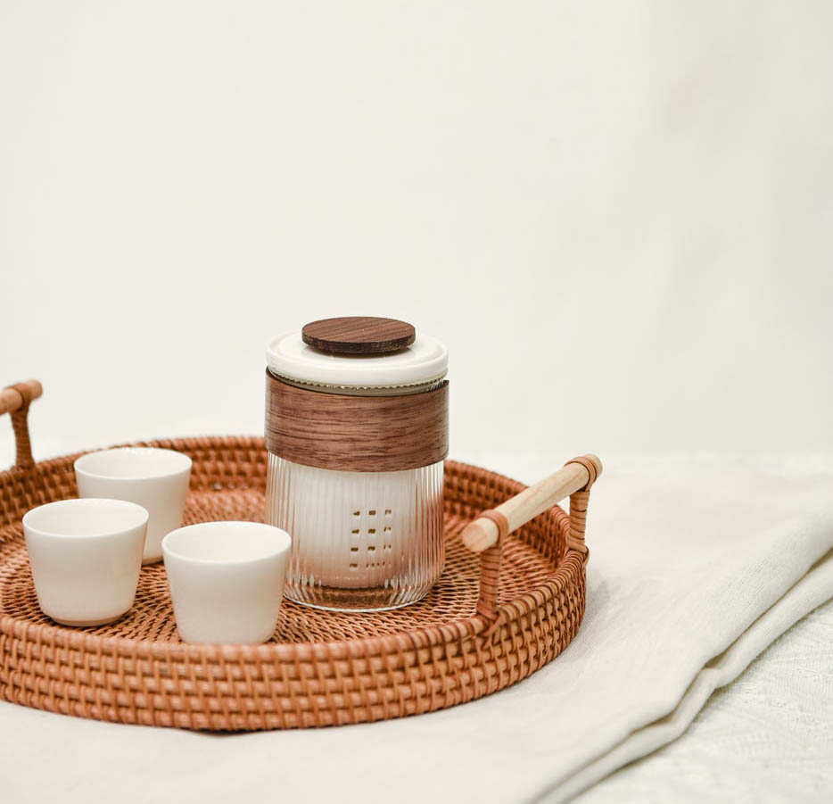
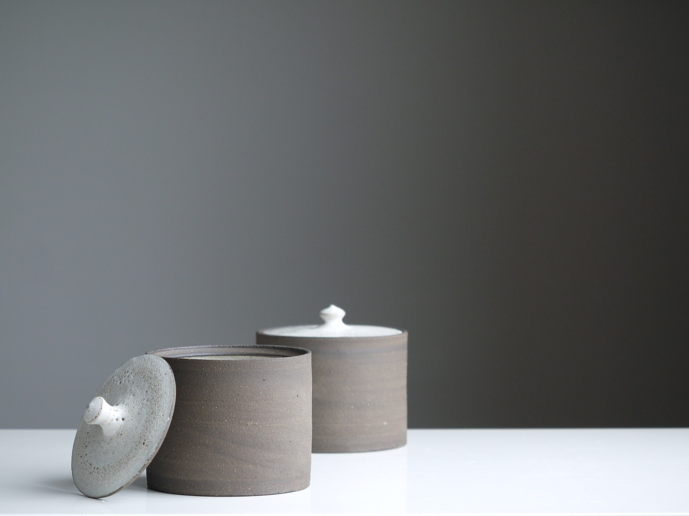

BAT TRANG
Pottery in Bat Trang pottery village is different, however, they are usually divided into 3 groups. The first is handy utensils such as tea pots, vases, jars, plates. What follows is a cult costume consisting of a candle holder, an altar box, an incense burner and so on. There are also decorations including models of houses, animal figurines and deities.



Gentle
The gentleness to the subtle makes
Gentle
&
Delicate
The gentleness to the subtle makes
our soul at ease.
Perfect circle makes our heart feel peaceful
